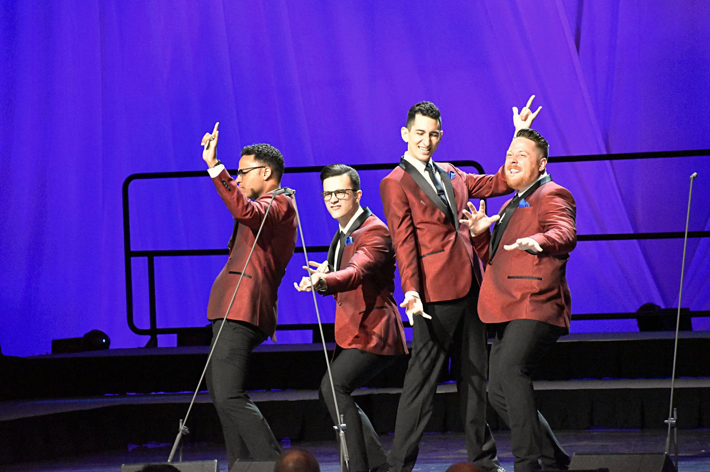

Midtown is a barbershop quartet from New York City. They are the 2019 Champion of the Mid-Atlantic District (MAD) of the Barbershop Harmony Society (BHS). They are BHS's 2023 International Quartet Champion. Their most well known song is their cover of the Theme from Spider-Man.
My dad's hobby is barbershop quartet singing, so I have been surrounded by this music all my life. I love Midtown in particular because they sing covers of more modern songs than the other quartets I am familiar with. They harmonize very well and are one of the only quartets I am familiar with that has their music available on streaming services for easy listening.
